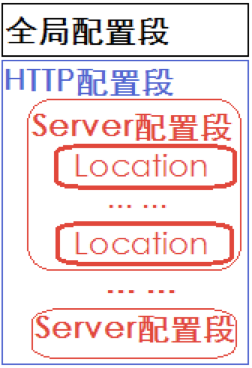

Nginx软件布署
安装nginx软件：
apt-get install -y build-essential libssl-dev libtool libpcre3 libpcre3-dev make openssl zlib1g-dev
apt-get install nginx -y
检查效果：
netstat -tnulp | grep nginx
服务相关命令:
systemctl start|stop|reload|... nginx
/etc/init.d/nginx start|stop|reload|...
/usr/sbin/nginx
nginx -V
移除相关命令：
查看和nginx相关软件
dpkg --get-selections|grep nginx
移除nginx，包括相关文件
apt-get --purge remove nginx
apt-get --purge remove nginx-common
apt-get --purge remove nginx-core
Nginx配置介绍
nginx软件目录：
- 工作目录：/etc/nginx
- 执行文件: /usr/sbin/nginx
- 日志目录：/var/log/nginx
- 启动文件：/etc/init.d/nginx
- web目录：/var/www/html/，首页文件是index.nginx-debian.html
- /usr/share/nginx/html/ 首页文件是index.html
nginx配置文件：
配置文件：
/etc/nginx/nginx.conf文件结构：
- 全局配置段
- http配置段
- server配置段 项目或者应用
- location配置段 url配置
